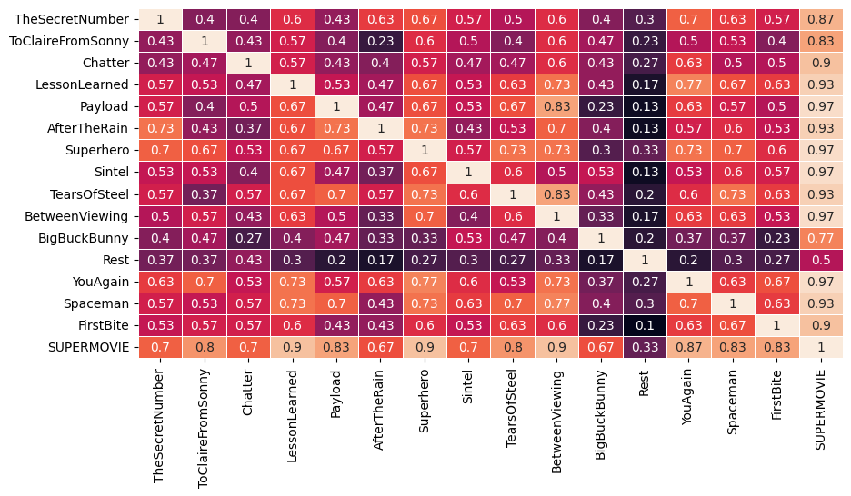
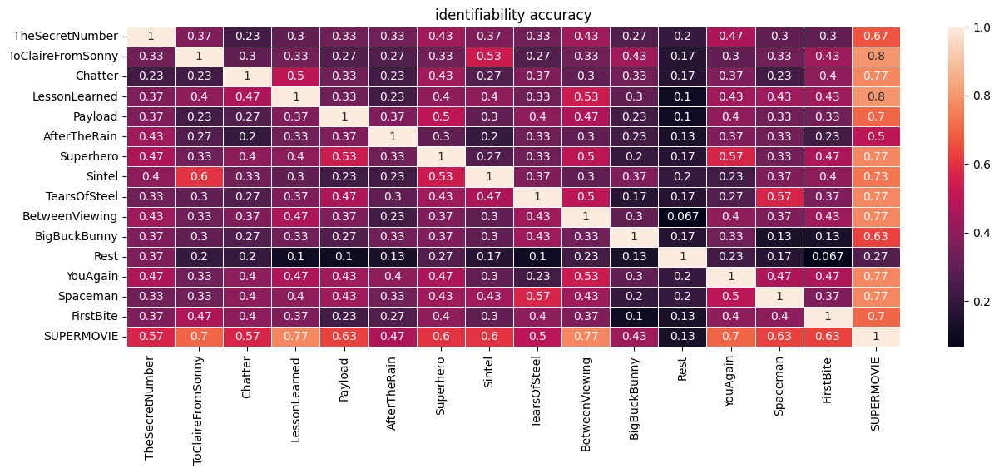
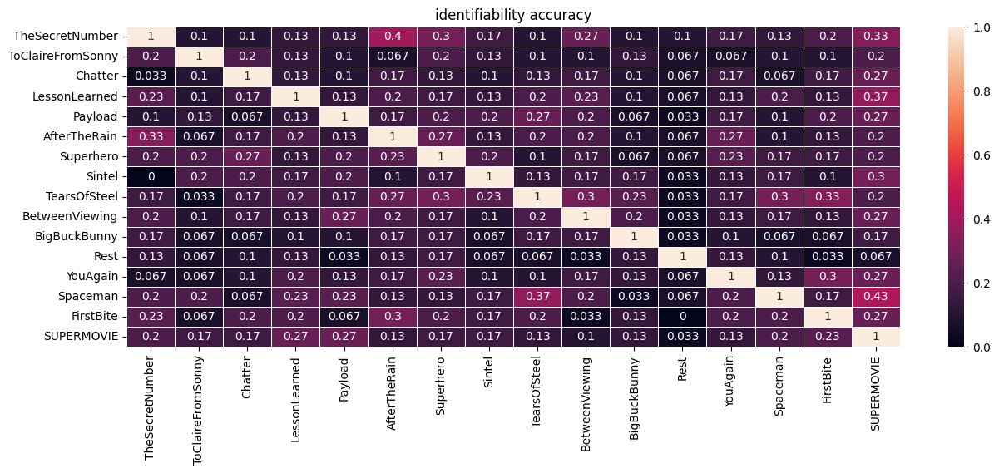

12. Matching Gradients
[2]:
from src import *
[4]:
### Un-used Functionals specific to this notebook
# gradients distance defined by the diff of two gradient's networks' volume
def gradients_network_distance(G1,G2,similarity=True):
networks = list(index2region.keys())
V1 = np.asarray([network_volume(G1, R) for idx, R in enumerate(networks)])
V2 = np.asarray([network_volume(G2, R) for idx, R in enumerate(networks)])
# dist = np.sum((V1 - V2)**2)
if similarity:
dist = pearson_correlation(V1,V2)
else:
dist = np.sum((V1 - V2)**2)
return dist
# gradients distance with scores being the distance to centroid of each gradient
def gradients_distance2(G1,G2,similarity=False, pmethod='L2'):
c1 = G1.mean(axis=0)
c2 = G2.mean(axis=0)
V1 = np.asarray([points_distance(G1[n],c1, pmethod=pmethod) for n in range(len(G1))])
V2 = np.asarray([points_distance(G2[n],c2, pmethod=pmethod) for n in range(len(G2))])
if similarity:
dist = pearson_correlation(V1,V2)
else:
dist = np.sum((V1 - V2)**2)
return dist
Description
Matching gradients of same individual across rest/ movies
GOAL: Evaluate how matchable gradients of same individual are across rest/ movies
Table of Contents
## Scoring the similarity & Matching
[12]:
np.random.seed(99)
null_repetition = 10
files = os.listdir('./resources/static_grad/individual_level/')
# we only consider parcel 400 for now
files = [f for f in files if '400' in f]
pred_grid = np.zeros((len(files), len(files)))
null_grid = np.zeros((null_repetition,len(files), len(files)))
for k in tqdm(range(len(files))):
target = load('./resources/static_grad/individual_level/{}'.format(files[k]))
for j in range(len(files)):
database = load('./resources/static_grad/individual_level/{}'.format(files[j]))
subjects = list(database.keys())
database_grad = [database[sub] for sub in subjects]
matches = []
null_matches = np.zeros((null_repetition, len(subjects)))
for sidx, sub in enumerate(subjects):
target_grad = target[sub]
# align all database gradients to target gradient
aligned_grad,_,score = procrustes_align(database_grad, ref=target_grad)
# if np.sum(np.asarray(score) > 100) > 0: print('Warning: might not be well-aligned') #the choice of 100 is arbitrary and empirically motivated
distances = [gradients_distance(aligned_grad[i], target_grad, pmethod="L2")
for i in range(len(aligned_grad))]
# distances = [gradients_network_distance(aligned_grad[i], target_grad, similarity=False)
# for i in range(len(aligned_grad))]
# distances = [gradients_distance2(aligned_grad[i], target_grad, similarity=False)
# for i in range(len(aligned_grad))]
indexmatch = np.argsort(distances)[:1]
bestmatch = [subjects[b] for b in indexmatch]
for nbr in range(null_repetition):
null_subjects = deepcopy(subjects)
np.random.shuffle(null_subjects)
nullmatch = [null_subjects[b] for b in indexmatch]
null_matches[nbr, sidx] = sub in nullmatch
matches.append(sub in bestmatch)
null_grid[:,k,j] = np.mean(null_matches,axis=1)
pred_grid[k,j] = np.mean(matches)
Gradients distance metric
[21]:
plt.figure(figsize=(10,5))
# plt.title("identifiability accuracy")
x_axis_labels = [f.split('_')[0] for f in files] # labels for x-axis
sns.heatmap(pred_grid, linewidth=0.5, annot=True, xticklabels=x_axis_labels, yticklabels=x_axis_labels, cbar=False)
[21]:
<AxesSubplot:>

Gradients distance2 metric
[7]:
plt.figure(figsize=(15,5))
plt.title("identifiability accuracy")
x_axis_labels = [f.split('_')[0] for f in files] # labels for x-axis
sns.heatmap(pred_grid, linewidth=0.5, annot=True, xticklabels=x_axis_labels, yticklabels=x_axis_labels)
[7]:
<AxesSubplot:title={'center':'identifiability accuracy'}>

Gradients Distance (network)
[11]:
plt.figure(figsize=(15,5))
plt.title("identifiability accuracy")
x_axis_labels = [f.split('_')[0] for f in files] # labels for x-axis
sns.heatmap(pred_grid, linewidth=0.5, annot=True, xticklabels=x_axis_labels, yticklabels=x_axis_labels)
[11]:
<AxesSubplot:title={'center':'identifiability accuracy'}>

[ ]: